File: 000120.gt.txt (if the image is defective, simply delete all Arabic text and the line will be excluded)
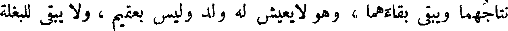
نتاجهما ويبقى بقاءهما ، وهو لا يعيش له ولد وليس بعقيم ، ولا يبقى للبغلة
File: 000121.gt.txt (if the image is defective, simply delete all Arabic text and the line will be excluded)
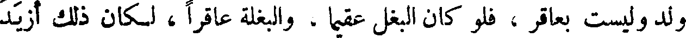
ولد وليست بعاقر ، فلو كان البغل عقيما ، والبغلة عاقرا ، لكان ذلك أزيد
File: 000122.gt.txt (if the image is defective, simply delete all Arabic text and the line will be excluded)
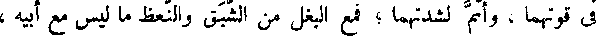
في قوتهما ، وأتم لشدتهما ؛ فمع البغل من الشبق والنعظ ما ليس مع أبيه ،
File: 000123.gt.txt (if the image is defective, simply delete all Arabic text and the line will be excluded)
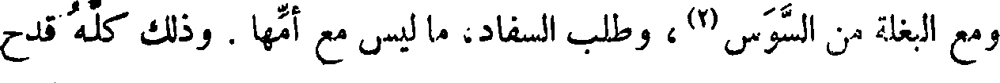
ومع البغلة من السوس(2)، وطلب السفاد، ما ليس مع أمها . وذلك كله قدح
File: 000124.gt.txt (if the image is defective, simply delete all Arabic text and the line will be excluded)
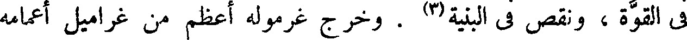
في القوة ، ونقص في البنية(3) . وخرج غرموله أعظم من غراميل أعمامه
File: 000125.gt.txt (if the image is defective, simply delete all Arabic text and the line will be excluded)
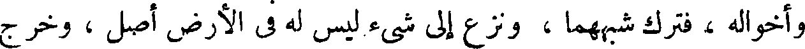
وأخواله ، فترك شبههما ، ونزع إلى شيء ليس له في الأرض أصل ، وخرج
File: 000126.gt.txt (if the image is defective, simply delete all Arabic text and the line will be excluded)
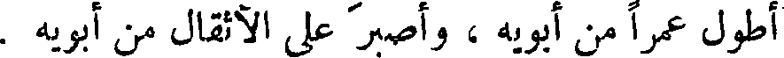
أطول عمرا من أبويه ، وأصبر على الأثقال من أبويه .
File: 000127.gt.txt (if the image is defective, simply delete all Arabic text and the line will be excluded)
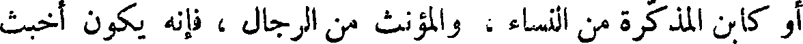
أو كابن المذكرة من النساء ، والمؤنث من الرجال ، فإنه يكون أخبث
File: 000128.gt.txt (if the image is defective, simply delete all Arabic text and the line will be excluded)
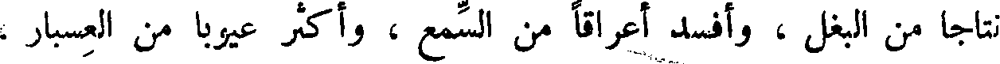
نتاجا من البغل ، وأفسد أعراقا من السمع ، وأكثر عيوبا من العسبار ،
File: 000129.gt.txt (if the image is defective, simply delete all Arabic text and the line will be excluded)
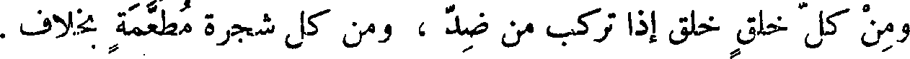
ومن كل خلق خلق إذا تركب من ضد ، ومن كل شجرة مطعمة بخلاف .
File: 000130.gt.txt (if the image is defective, simply delete all Arabic text and the line will be excluded)
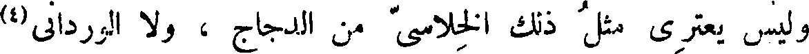
وليس يعتري مثل ذلك الخلاسي من الدجاج ، ولا الورداني(4)
File: 000131.gt.txt (if the image is defective, simply delete all Arabic text and the line will be excluded)
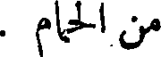
من الحمام .
File: 000132.gt.txt (if the image is defective, simply delete all Arabic text and the line will be excluded)
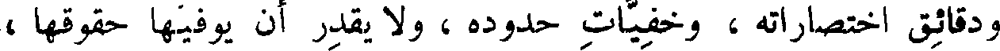
ودقائق اختصاراته ، وخفيات حدوده ، ولا يقدر أن يوفيها حقوقها ،
File: 000133.gt.txt (if the image is defective, simply delete all Arabic text and the line will be excluded)
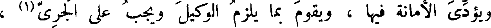
ويؤدي الأمانة فيها ، ويقوم بما يلزم الوكيل ويجب على الجري(1) ،
File: 000134.gt.txt (if the image is defective, simply delete all Arabic text and the line will be excluded)
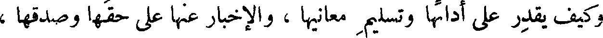
وكيف يقدر على أدائها وتسليم معانيها ، والإخبار عنها على حقها وصدقها ،
File: 000135.gt.txt (if the image is defective, simply delete all Arabic text and the line will be excluded)
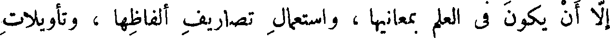
إلا أن يكون في العلم بمعانيها ، واستعمال تصاريف ألفاظها ، وتأويلات
File: 000136.gt.txt (if the image is defective, simply delete all Arabic text and the line will be excluded)
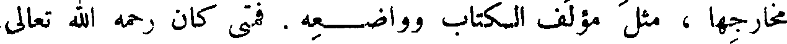
مخارجها ، مثل مؤلف الكتاب وواضعه . فمتى كان رحمه الله تعالى
File: 000137.gt.txt (if the image is defective, simply delete all Arabic text and the line will be excluded)
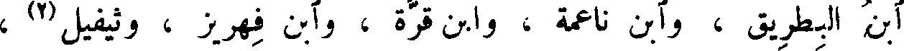
ابن البطريق ، وآبن ناعمة ، وابن قرة ، وآبن فهريز ، وثيفيل(4) ،
File: 000138.gt.txt (if the image is defective, simply delete all Arabic text and the line will be excluded)
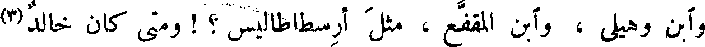
وآبن وهيلي ، وآبن المقفع ، مثل أرسطاطاليس ؟ ! ومتى كان خالد(3)
File: 000139.gt.txt (if the image is defective, simply delete all Arabic text and the line will be excluded)
( شرائط الترجمان )
File: 000140.gt.txt (if the image is defective, simply delete all Arabic text and the line will be excluded)
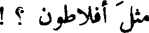
مثل أفلاطون ؟ !
File: 000141.gt.txt (if the image is defective, simply delete all Arabic text and the line will be excluded)
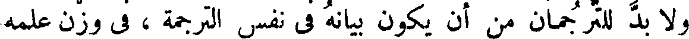
ولا بد للترجمان من أن يكون بيانه في نفس الترجمة ، في وزن علمه
File: 000142.gt.txt (if the image is defective, simply delete all Arabic text and the line will be excluded)
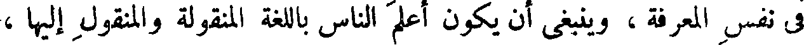
في نفس المعرفة ، وينبغي أن يكون أعلم الناس باللغة المنقولة والمنقول إليها ،
File: 000143.gt.txt (if the image is defective, simply delete all Arabic text and the line will be excluded)
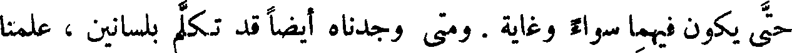
حتى يكون فيهما سواء وغاية . ومتى وجدناه أيضا قد تكلم بلسانين ، علمنا
File: 000144.gt.txt (if the image is defective, simply delete all Arabic text and the line will be excluded)
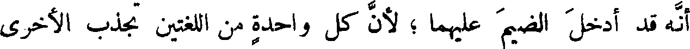
أنه قد أدخل الضيم عليهما ؛ لأن كل واحدة من اللغتين تجذب الأخرى
File: 000145.gt.txt (if the image is defective, simply delete all Arabic text and the line will be excluded)
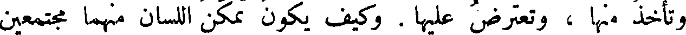
وتأخذ منها ، وتعترض عليها . وكيف يكون تمكن اللسان منهما مجتمعين
File: 000146.gt.txt (if the image is defective, simply delete all Arabic text and the line will be excluded)
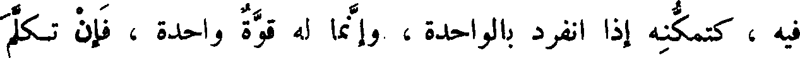
فيه ، كتمكنه إذا انفرد بالواحدة ، وإنما له قوة واحدة ، فإن تكلم
File: 000147.gt.txt (if the image is defective, simply delete all Arabic text and the line will be excluded)
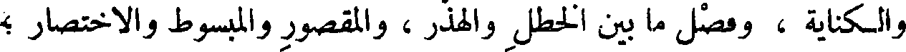
والكناية ، وفصل ما بين الخطل والهذر ، والمقصور والمبسوط والاختصار ؛
File: 000148.gt.txt (if the image is defective, simply delete all Arabic text and the line will be excluded)
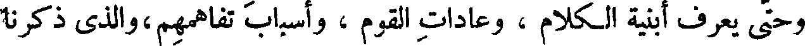
وحتى يعرف أبنية الكلام ، وعادات القوم ، وأسباب تفاهمهم،والذي ذكرنا
File: 000149.gt.txt (if the image is defective, simply delete all Arabic text and the line will be excluded)
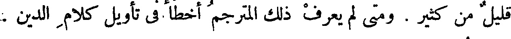
قليل من كثير . ومتى لم يعرف ذلك المترجم أخطأ في تأويل كلام الدين .
To Save: `Ctrl+s`, make sure to choose `Webpage, complete`!